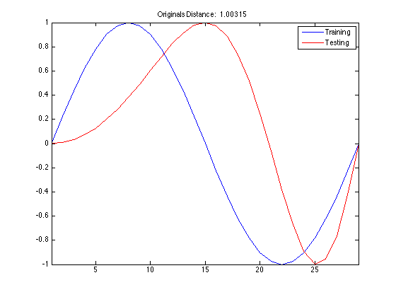
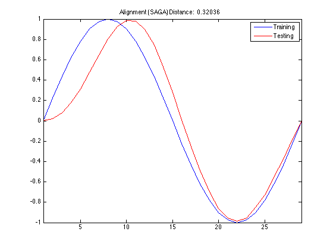
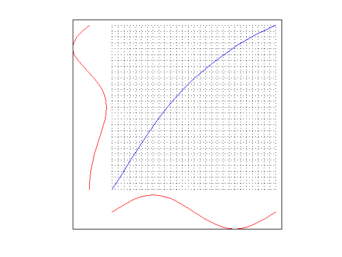
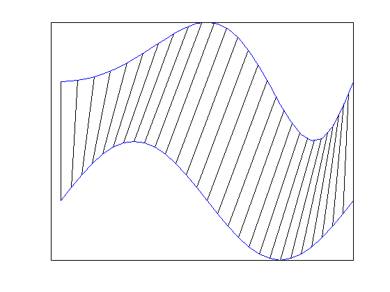

TSCU test suite: 05
This time I set Alignment option to SAGA which is another alignment technique proposed in the following article. In order to run SAGA you need Genetic Algorithm toolbox. If you don't have it, then you can always use DTW, CDTW or even CREG.
- SAGA: A novel signal alignment method based on genetic algorithm, H. Kaya and S. G. Oguducu, Information Sciences, 2013.
- Author : Huseyin Kaya
- Website: http://timewarping.org
- Sources: https://github.com/hkayabilisim/TSCU
Contents
Initialization
As always I clear and close everything.
clear all close all clc
Creating a toy example
Let's create 4 time series with two different classes: sine and cosine. We also deviced an artifical change within the same class time series by warping the time axis with w(t)=t^2.
Name Function Class Set ---- -------- ----- -------- a sin(2*pi*t) 1 Training b sin(2*pi*t*t) 1 Testing c cos(2*pi*t) 2 Training d cos(2*pi*t*t) 2 testing
tst and trn vectors contain both the time series and their class labels.
t = linspace(0,1,29); a = sin(2*pi*t); b = sin(2*pi*t.^2); c = cos(2*pi*t); d = cos(2*pi*t.^2); trn = [ 1 a ; 2 c]; tst = [ 1 b ; 2 d];
Building the MEX file
SAGA is implemented in C, so we should compile the corresponding function by using mex
mex tscu_saga_register.c tscu_saga_util.c
Building with 'Xcode with Clang'. MEX completed successfully.
Running TSCU with SAGA
In order to use SAGA alignment algorithm, you should set Alignment option to SAGA. But remember that you should have Genetic Algorithm toolbox. In order to see the alignment and warping functions, I again use DisplayAlignment option.
As you can see from the figures, the alignment is much more smoother than DTW. The warping function and the mapping are also smooth. This is beacuse of the fact that SAGA uses smooth monotone functions which are introduced by J. O. Ramsay.
Another think to take a note of: the lenth of the time series don't change after alignment.
tscu(trn,tst,'Alignment','SAGA','DisplayAlignment',{1,1});
Size of training set.....................: 2
Size of testing set......................: 2
Time series length.......................: 29
Classification method....................: K-NN
Alignment method.........................: SAGA
Displaying input data....................: no
No cross validation is chosen............: 0
SAGA number of spline bases..............: 8
SAGA optimization method.................: GA
SAGA initial solution....................: 0.00 0.00 0.00 0.00 0.00 0.00 0.00 0.00
SAGA cost function.......................: Jcost0
Displaying alignments (trn)..............: 1
Displaying alignments (tst)..............: 1
Dumping distance matrix..................: no
Class information........................: 1 [TRN: 1 TST: 1]
Class information........................: 2 [TRN: 1 TST: 1]
index of testing objects.................: 1 2
labels of testing objects (True).........: 1 2
labels of testing objects (Estimated)....: 1 2
closest training objects.................: 1 2
Overall Accuracy.........................: 1.000
Overall Error............................: 0.000
Producer Accuracy........................: 1.000 1.000
User Accuracy............................: 1.000 1.000
Kappa....................................: 1.000
Z-value..................................: Inf
Confusion matrix.........................:
Confusion matrix
1 2 UA TO
1 1 0 1.000 1
2 0 1 1.000 1
PA 1.000 1.000
TO 1 1 2
Classification time (sec)................: 1.86
The end of TSCU..........................: FINISHED
   